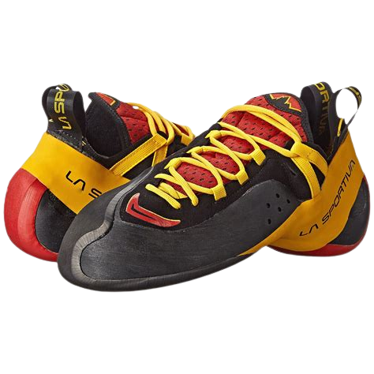
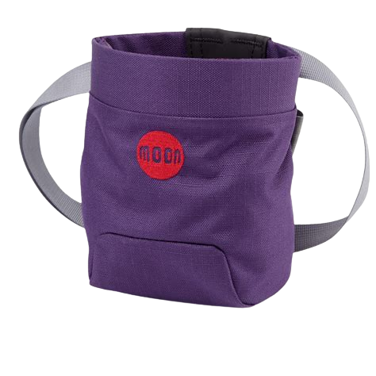
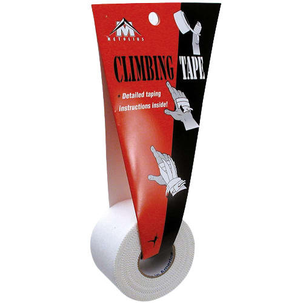

Gym Gear
Now what qualifies me to give this advice? Absolutely nothing! I'm just a dood that likes to climb and is kinda strong. I have 2 V6s under my belt and a V5 outside. I'm not huge on sport climbing and I dont have the training to lead, but I have sent a 5.12+ inside. If that made no sense to you, don't worry. If you end up trying rock climbing and decide you like it, you'll quickly learn where those ratings stand on the climbing scales.
Now what qualifies me to give this advice? Absolutely nothing! I'm just a dood that likes to climb and is kinda strong. I have 2 V6s under my belt and a V5 outside. I'm not huge on sport climbing and I dont have the training to lead, but I have sent a 5.12+ inside. If that made no sense to you, don't worry. If you end up trying rock climbing and decide you like it, you'll quickly learn where those ratings stand on the climbing scales.
|  |  |